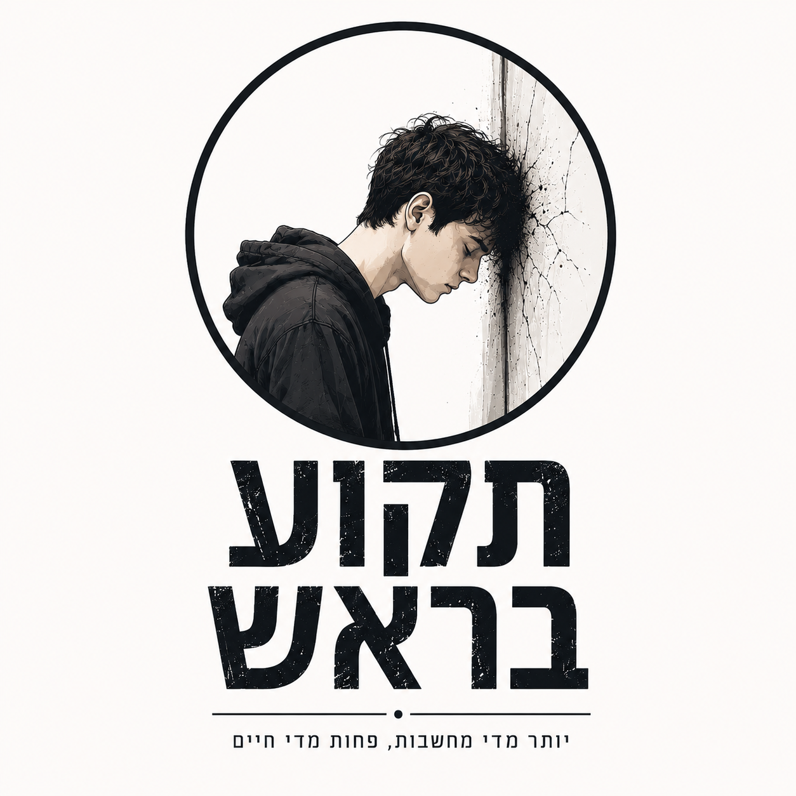

כמעט 20 שנה חייתי עם דיכאון.
זה הספר שהייתי רוצה שמישהו ייתן לי אז.
לא מצאתי פתרון קסם. השינוי נבנה לאט, מתוך דברים קטנים שלמדתי בדרך. ריכזתי כאן את הדברים שהכי עזרו לי להבין איך מתחילים לחזור לחיים.
לקריאת הספר בחינםכחצי שעה קריאה · PDF · ללא תשלום
מה יש בספר?
מבט מבפנים על דיכאון ותקיעות — לא כשיטה טיפולית ולא כאיש מקצוע, אלא מתוך החוויה של מי שהיה שם במשך שנים.
מחשבות שלא מפסיקות להסתובב
הצלחות קטנות ובניית ביטחון
התמדה, עשייה וחזרה לחיים
החיפוש אחר הדבר ש"יסדר הכול"
זוגיות, חוסר ביטחון והחלום הגדול
איך להתחיל לזוז גם כשהכול עוד לא פתור
חשוב לי לומר: אני לא מטפל או איש מקצוע בתחום בריאות הנפש. הספר נכתב מתוך הניסיון האישי שלי ומתוך הדברים שלמדתי בדרך. הוא אינו תחליף לעזרה מקצועית כשזו נדרשת.
אם הספר נתן לכם משהו
אם תוך כדי הקריאה עלה לכם אדם שהדברים האלה יכולים לדבר אליו — חבר או חברה, בן או בת משפחה, הורה או מישהו שמתמודד בעצמו — אשמח פשוט שתעבירו לו את הקישור.
רוצים להישאר בקשר?
אפשר לכתוב לי, להזמין הרצאה או מפגש, או לבקש להצטרף לקבוצת הוואטסאפ השקטה של "תקוע בראש", שבה אעדכן מדי פעם על מעגלי שיח, הרצאות וחומרים חדשים.
takua.barosh@gmail.com